『星が降る夜のピアニストⅡ』

あの夜。
少年は、まばゆい光の中に消えた。
遠くで聞こえるピアノの音。
誰かが、自分を呼んでいるような気がした。
けれど、その声も次第に遠ざかり——
やがて、何も聞こえなくなった。

どれくらい眠っていたのだろう。
少年がゆっくりと目を開けると、そこには見覚えのある街が広がっていた。

石畳の道。
古い時計台。
角にある小さな花屋。
いつもと変わらない景色。
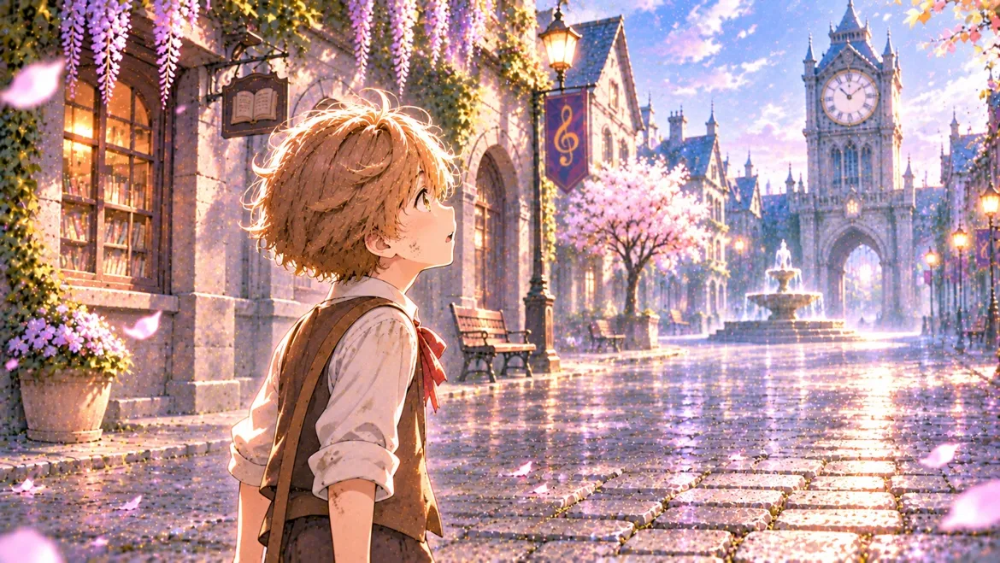
けれど、何かがおかしい。
「……あれ？」
誰もいない。
花屋にも、パン屋にも、広場にも。
「おーい！」
少年は大きな声で叫んだ。
「誰かいませんかー！」
返事はない。
「ねえ！ どこにいるのー？」

少女を探して走り出した。
いつも一緒に歩いた道。
笑いながら駆け抜けた広場。
けれど、どこにも少女の姿はなかった。
「……どこ行っちゃったんだよ」

ふと、時計台を見上げた。
時計の針は、あの夜の時刻を指したまま止まっていた。
風が吹いた。
花屋の前に置かれたリボンが、ひらひらと揺れている。
なのに、時計だけは動かない。
「……ここ、どこなんだろう」
少年は、もう一度少女の名前を呼んだ。
けれど、返事はなかった。

どれほど歩いただろう。
少年は広場のベンチに腰を下ろした。
「……おかしいなぁ」
街は、あの夜のままだった。
夕焼けの空も、建物の影も、何ひとつ変わらない。
朝にもならない。
夜にもならない。
少年は膝を抱えた。
「……ひとりじゃ、つまんないよ」

そのときだった。
ポーン……。
どこからか、小さな音が聞こえた。
少年は顔を上げた。
「……ピアノ？」
耳を澄ます。
ポロン……。
もう一度、音がした。
少年は立ち上がり、音のする方へ走り出した。
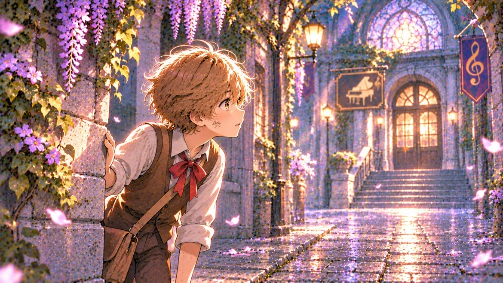
細い路地を抜け、古い階段を上る。
そこには、小さな建物があった。
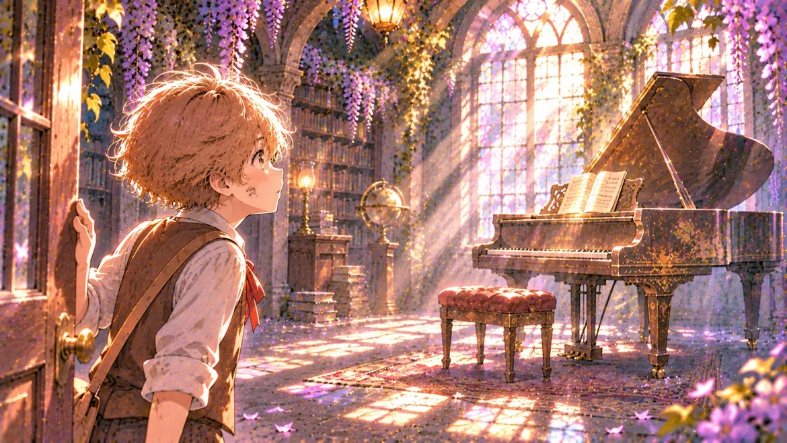
扉を開けると、一台の古いピアノが置かれていた。
けれど、誰もいない。
「……あれ？ 誰が弾いてたんだろう」
少年はそっと鍵盤に触れた。
ポーン。
懐かしい音が響いた。

少年は椅子に座った。
そして、あの曲を弾き始めた。
ポロン、ポロン……。
「あっ、間違えた」
最初からやり直す。
ポロン、ポロン……。
「あれ？」
もう一度。
「あー！ また間違えた！」
少年は鍵盤に突っ伏した。
「なんで、うまく弾けないかなぁ……」
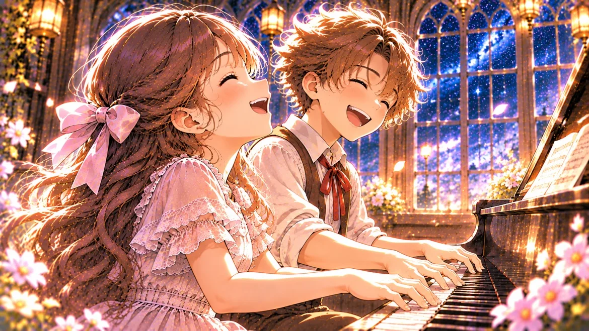
ふと、少女の笑顔が浮かんだ。
間違えるたびに笑っていた少女。
「もう一回！」
そう言って、何度でも付き合ってくれた。
少年は小さく笑った。
「……また、笑われちゃうな」
けれど、今はその笑い声も聞こえない。
少年は、もう一度鍵盤に指を置いた。

何度も。
何度も。
少年はピアノを弾いた。
間違えては、最初から。
途中まで弾けても、また間違える。
「……もう！」
少年は大きく息を吐いた。
そして、誰もいない部屋でつぶやいた。
「……ねえ、聞いてる？」
返事はない。
「今度こそ、ちゃんと弾くからさ」
少年は鍵盤を見つめた。
「……だから、もう一回会おうよ」

静かな部屋に、ピアノの音が響き始めた。
一音。
また一音。
今度は間違えない。
あの子と笑いながら弾いた曲。
あの子が大好きだった曲。
少年の指が、最後の鍵盤に触れた。
ポーン……。
美しい余韻が、部屋いっぱいに広がった。
「……弾けた！」
少年は思わず立ち上がった。

その瞬間。
カチッ。
どこかで、小さな音がした。
カチッ、カチッ、カチッ……。
少年が窓の外を見ると——
止まっていた時計台の針が、動き始めていた。
「……え？」
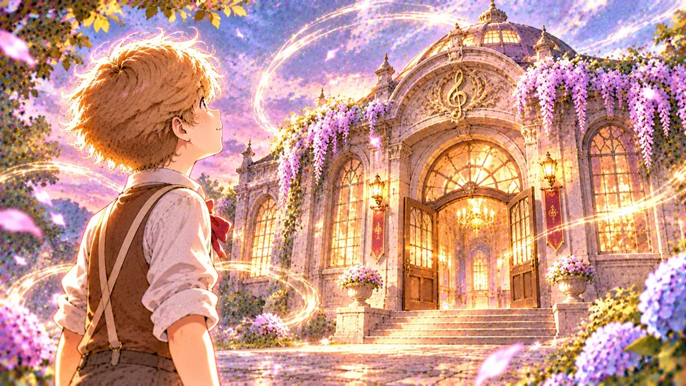
突然、風が吹き込んだ。
カーテンが大きく舞い上がる。
窓の外の景色が、ゆっくりと光に溶けていく。
石畳も。
時計台も。
夕焼けの空も。
「うわっ！」
少年は思わず目を閉じた。

やがて、風がやんだ。
恐る恐る目を開ける。
そこは、夜だった。
空には、無数の星が瞬いていた。
そして、目の前には——
見覚えのある音楽堂が建っていた。
「……あっ！」
少年は駆け出した。
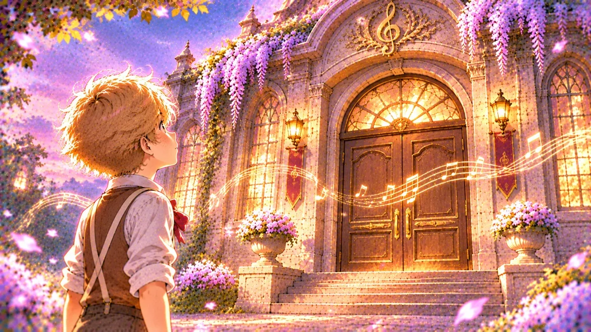
音楽堂の窓から、柔らかな光が漏れていた。
中からは、ピアノの音が聞こえてくる。
少年は足を止めた。
「……この曲」
知っている。
何度も聴いた。
何度も一緒に弾いた。
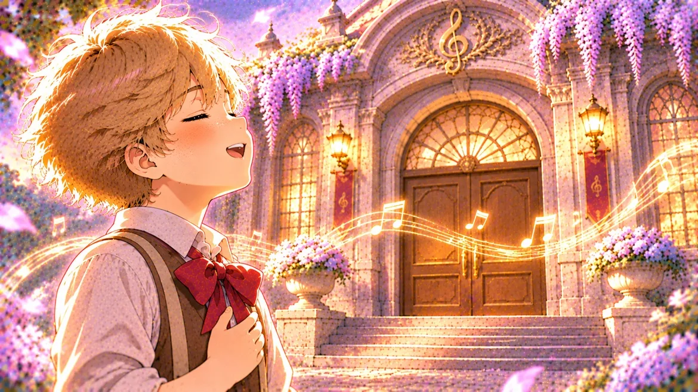
少年は、思わず鼻歌を歌い始めた。
ふん、ふふん……。

その頃。
音楽堂の中では、ひとりの女性がピアノを弾いていた。
あの夜から、十数年。
少女は、大人になっていた。
季節がいくつも過ぎた。
街の景色も、少しずつ変わった。
けれど、彼女は今も、あの曲を弾いていた。
あの夜のことを、忘れたことはなかった。
少年の笑い声。
何度も間違えたピアノ。
そして、光の中に消えてしまった、小さな背中。
もう一度会えたら。
何度、そう願っただろう。
けれど、叶うはずのない願いだと思っていた。

そのときだった。
ふん、ふふん……。
「……え？」
女性の指が止まりかけた。
外から聞こえる鼻歌。
聞き間違いだろうか。
そんなはずはない。
あの鼻歌を歌う人は、もういないはずなのに。
女性は、もう一度鍵盤に指を置いた。
すると——
ふん、ふふん……。
鼻歌が、ピアノの旋律に重なった。
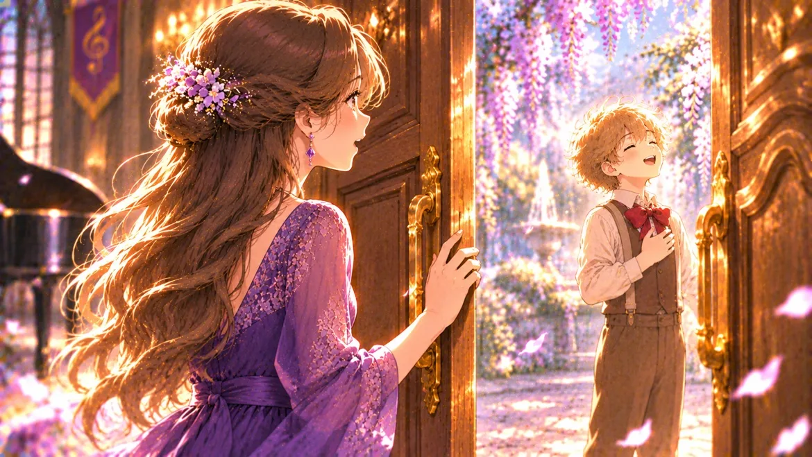
女性の胸が高鳴った。
「……まさか」
そのとき。
ギィ……。
音楽堂の扉が、ゆっくりと開いた。

扉の向こうに立っていたのは——
小さな男の子だった。
あの夜と、まったく変わらない姿。
女性は息をのんだ。
「……うそ」
少年も、女性を見つめていた。
「……あれ？」
少し首をかしげる。
「……もしかして」
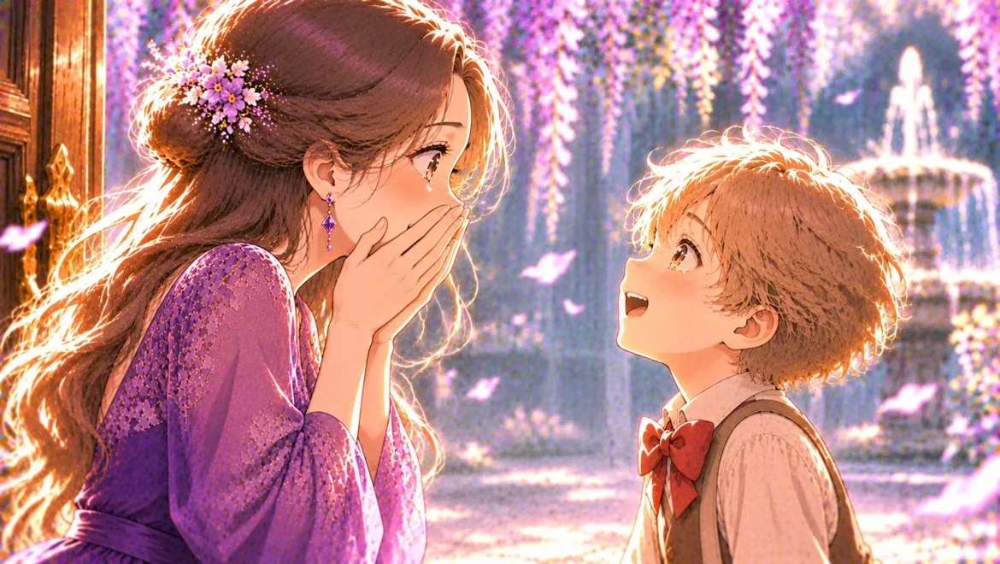
女性は、ゆっくりと立ち上がった。
一歩。
また一歩。
「……ほんとうに？」
少年は女性の顔をじっと見つめた。
そして、目を大きく見開いた。
「……きみなの？」
女性の目から、涙がこぼれた。
「……うん」

少年が駆け寄った。
二人は、ぎゅっと手を握り合った。
「……また、会えた」
「……うん。会えたね」

少年は不思議そうに女性を見上げた。
「……なんだか、大きくなったね」
女性は涙を流しながら笑った。
「……あなたは、ちっとも変わらないね」
少年は首をかしげた。
「……そう？」
その顔が、あの頃のままで。
女性は、また泣きながら笑った。
ずっと会いたかった。
もう一度、声を聞きたかった。
もう一度、一緒に笑いたかった。
その願いが、今、目の前にあった。

そのときだった。
ポーン。
誰も触れていないピアノから、音が響いた。
ポロン、ポロン……。
鍵盤が、ひとりでに動き始める。
二人が振り返ると、音楽堂の天井に小さな星が瞬き始めた。
ひとつ。
ふたつ。
やがて、無数の星がゆっくりと降りてくる。
「……きれい」
女性がつぶやいた。
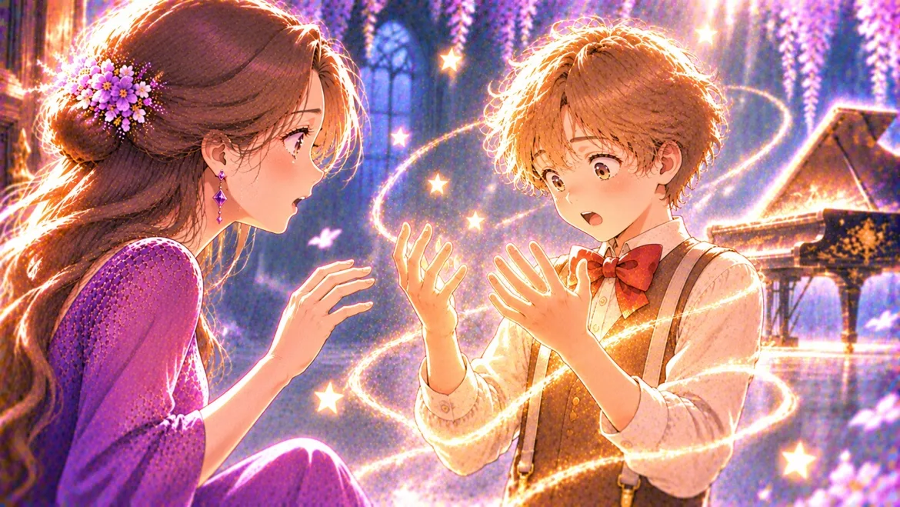
けれど、その星たちが少年の周りを取り囲み始めたとき——
女性の表情が変わった。
「……え？」
あの夜の光。
あの夜と、同じ輝き。
少年が消えてしまった、あの瞬間がよみがえる。

「……待って」
女性は少年の手を強く握った。
「ねえ……また光って、消えたりしないよね？」
星の光が、少しずつ強くなる。
「ねえ、ちょっと……！」
少年は不思議そうに女性を見上げた。
「……どうしたの？」
「いや……お願い……！」
女性は少年を引き寄せようとした。
「もう、どこにも行かないで……！」

その瞬間。
まばゆい光が、二人の間にあふれた。
「……っ！」
女性は思わず目を閉じた。
握っていた手が、ふっと離れる。
「……いやっ！」
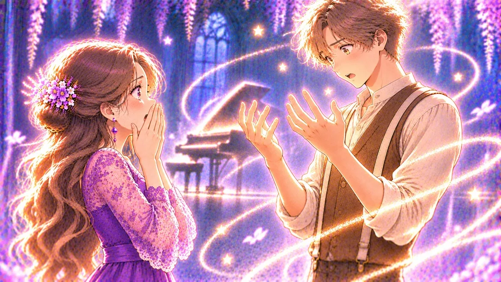
静寂。
ピアノの音だけが響いている。
女性は、恐る恐る目を開けた。
「……え？」
そこには——
ひとりの青年が立っていた。
青年は、自分の手を見つめている。
「……あれ？」
女性は息をのんだ。
「……あなた？」
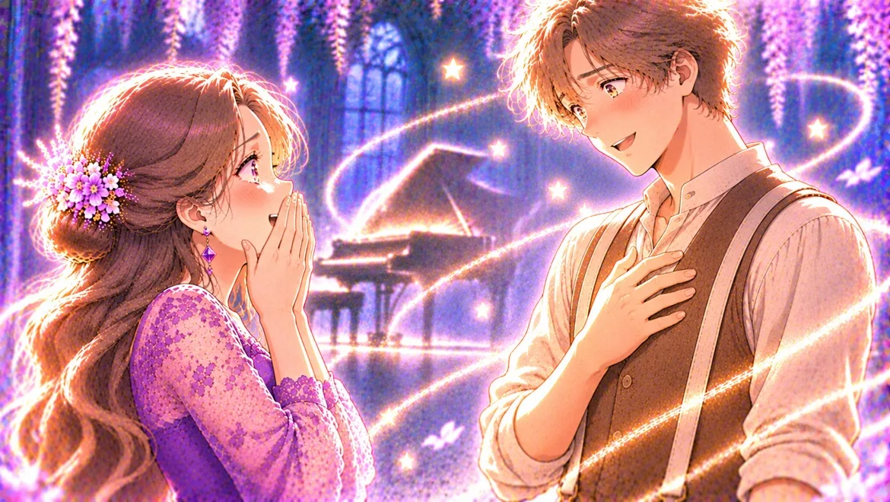
青年が顔を上げる。
そして、あの頃と同じ笑顔で言った。
「……ぼく、消えてないよ？」
女性は一瞬ぽかんとして——
次の瞬間、泣きながら笑った。
「……もうっ！ びっくりさせないでよ……！」
青年も笑った。
ふと、自分の腕や足を見下ろした。
「……あれ？ ぼく、大きくなってる？」
女性は、涙をぬぐいながらうなずいた。
「……うん。すっごく」
青年は不思議そうに自分の手を眺めた。
そして、少し照れくさそうに笑った。
その笑顔は、あの頃の少年のままだった。

青年は、そっと手を差し出した。
女性は、その手を握った。
今度こそ、離さないように。
そのとき。
音楽堂の大きな窓の向こうを、一筋の流れ星が横切った。
続いて、もうひとつ。
そして、またひとつ。
夜空いっぱいに、星が降り始めた。
「……すごい」
青年がつぶやいた。
女性は星空を見上げた。
「……音楽堂の奇跡、なのかな」
青年も空を見上げる。
「……そうかもしれないね」
二人は顔を見合わせ、笑った。
そして、手をつないだまま、星空を眺めていた。
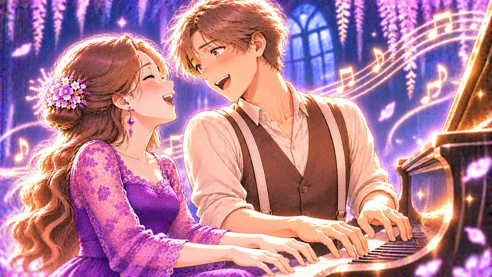
すると——
青年が、小さく鼻歌を歌い始めた。
ふん、ふふん……。
誰もいないピアノが、その鼻歌に合わせるように静かに鳴り始める。
ポロン、ポロン……。
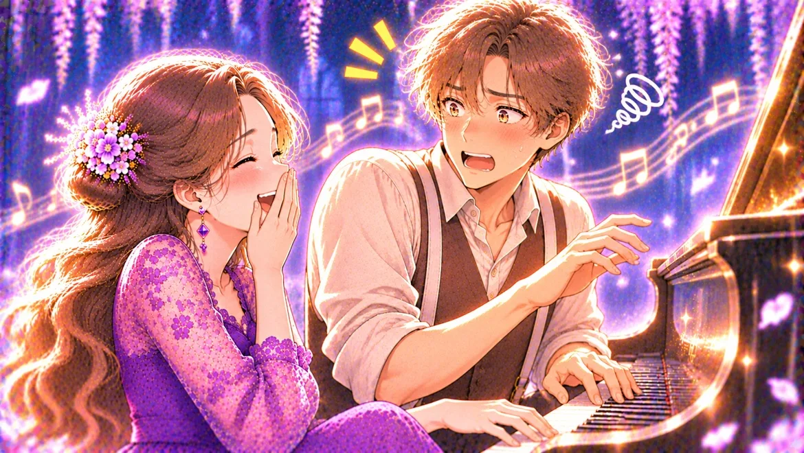
女性は、くすっと笑った。
「……また間違えた」
青年は驚いて振り返った。
「えっ！？ 今のところ！？」
「うん。そこ、いつも間違えるよね」
「ええー！ せっかく弾けるようになったのに！」
二人は顔を見合わせた。
そして、声を上げて笑った。

音楽堂の窓の向こうでは、流れ星がいくつも、いくつも夜空を横切っていた。
あの夜、止まってしまった二人の時間。
それを再び動かしたのは、
流れ星と、ひとつのピアノの旋律だったのかもしれない。
そして今夜。
二人の物語は、もう一度動き始めた。
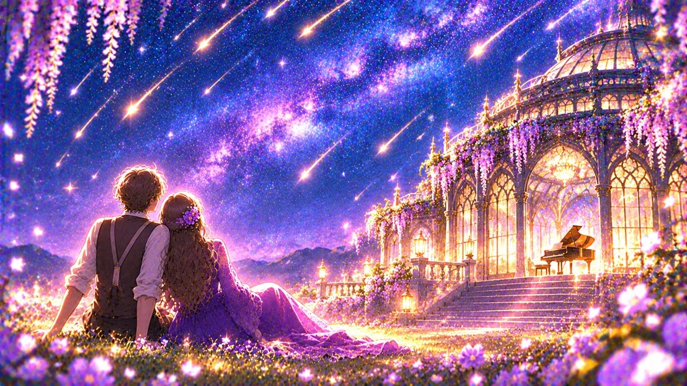